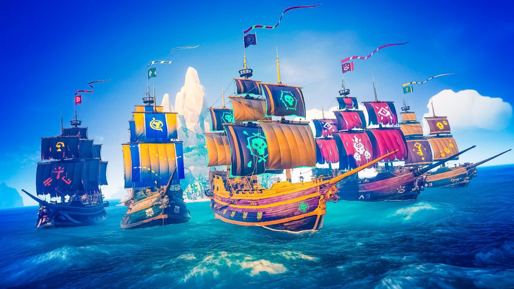

Unless you've invested in a VR headset, you probably haven't even heard of this one. However, it's a uniquely brilliant take on co-op play, and demands your attention. One person wears the VR headset, while a number of other people sit - in the real world - and look at a booklet of bomb-defusal documents.
The person inside the VR headset sees a briefcase with a bomb in it, and various devices to disarm, which he/she describes to the people in the real world. The idea is to use the bomb disposal docs to defuse the device by... actually talking to each other and cooperating. It's all set to a time limit to add tension, and bombs get increasingly tricky to dismantle as you play. It's brilliant fun, and a perfect party game.
Plus, it's now on Switch, so one of you will have the console in your hands, the other the instruction manual. It's a great piece of teamwork, and a word of warning, may ruin families.
Sea of Thieves

(Image credit: Saminus)
Although you can play Sea of Thieves solo, this is very much a game that encourages you to tell stories, and, more importantly, create those tales with other people. Galleons can be sailed by crews of up to four, with adventures spinning out from the various voyages you undertake. That might be finding buried treasure, collecting goods to trade with the merchants, or hunting down undead pirate captains. Or, you know, fighting a Kraken or taking on a huge Skeleton Fort. Whatever you do in Sea of Thieves, you'll need a crew. Then just let the hilarity commence.
Portal 2
(Image credit: BS-Studio)
If it were playable on current-gen consoles, Portal 2 would likely top this list. Right now, you can only play Portal 2 on PC, but don’t hold that against it. If you have a desktop or laptop that can run it (and most can), and a friend that can do the same, then you’re in for one of the best co-op experiences of your life. The co-op campaign is a noticeable jump in difficulty from the already fiendish original. Not only will you and a friend, who each control a loveable robot, have to put your heads together to figure out how to finish a test chamber, but you’ll often have to time your movements and actions just right. If one player jumps a split second early, or activates a button too late, the whole plan falls apart. It makes communication vital, and each puzzle all-the-more rewarding to solve. On top of those puzzles is a layer of Valve’s unmistakable humour, and GLaDOS (remember her?) is once again the star. You can high-five your friend, play rock paper scissors or, if you’re feeling evil, dunk them into deadly goo by pulling a bridge up from under their feet.